Chapter 7 · Part 1 — To the East
Jack and Annie stood still for a long moment.
Annie spoke first. “Well, I guess the tall ninja was pointing to the east,” she said. “I guess that’s the way we go.”
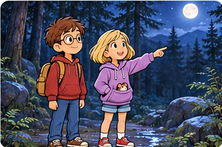
“Wait,” said Jack. “I need to write some stuff down.”
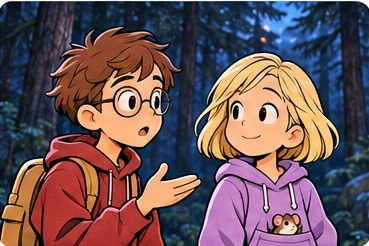
He took out his notebook. In the moonlight, he wrote:
1. use nature 2. be nature 3. follow nature
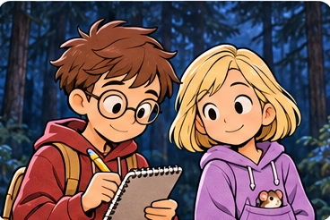
Look, Jack,” whispered Annie. “Do I look like a ninja?”
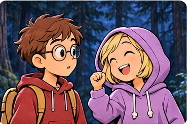
He looked at her. She had pulled her sweatshirt hood over her head and tied the strings tightly.
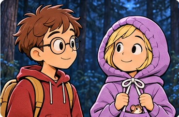
She did look like a ninja—a very small one.
“Good idea,” Jack whispered. He pulled his hood up, too.
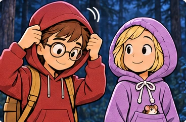
“Okay, let’s go,” said Annie.
Jack put his notebook away. Then he and Annie headed east into the woods.
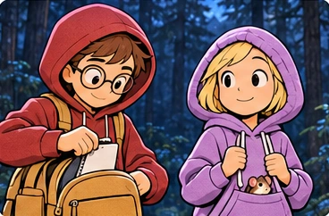
They slipped between trees. And more trees. And more trees.
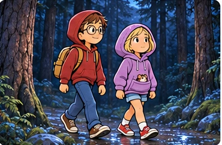
All the trees looked the same. Jack got confused. Were they still going in the right direction?
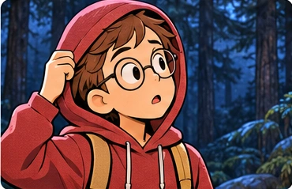
“Wait,” he said.
Annie stopped. They both stared at the woods around them.
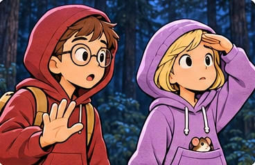
“Do you think we’re still going east?” asked Jack.
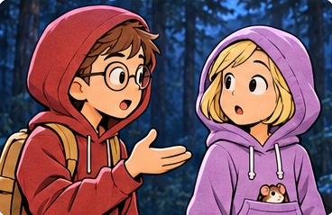
“I guess so,” said Annie.
“We can’t just guess,” said Jack. “We have to know for sure.”
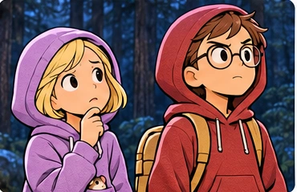
“How do we do that?” said Annie. “We don’t have a compass.”
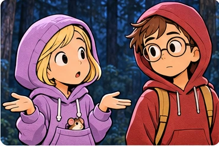
Just then the master’s words came back to Jack.
“The ninja master said to use nature,” he said.
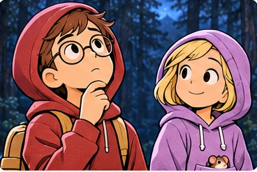
“How do we do that?” said Annie.
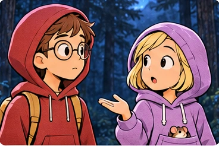
“Wait, I remember something—” Jack closed his eyes.
He remembered something in a camping book. Now what was it?
He opened his eyes. “I’ve got it! First we need a stick,” he said.
Annie picked up a stick. “Here—” she said.
“Great, now we just need a space with moonlight,” said Jack.
“There—” said Annie.
They moved into a moonlit space between the shadows.
“Now push the stick into the ground,” Jack said.